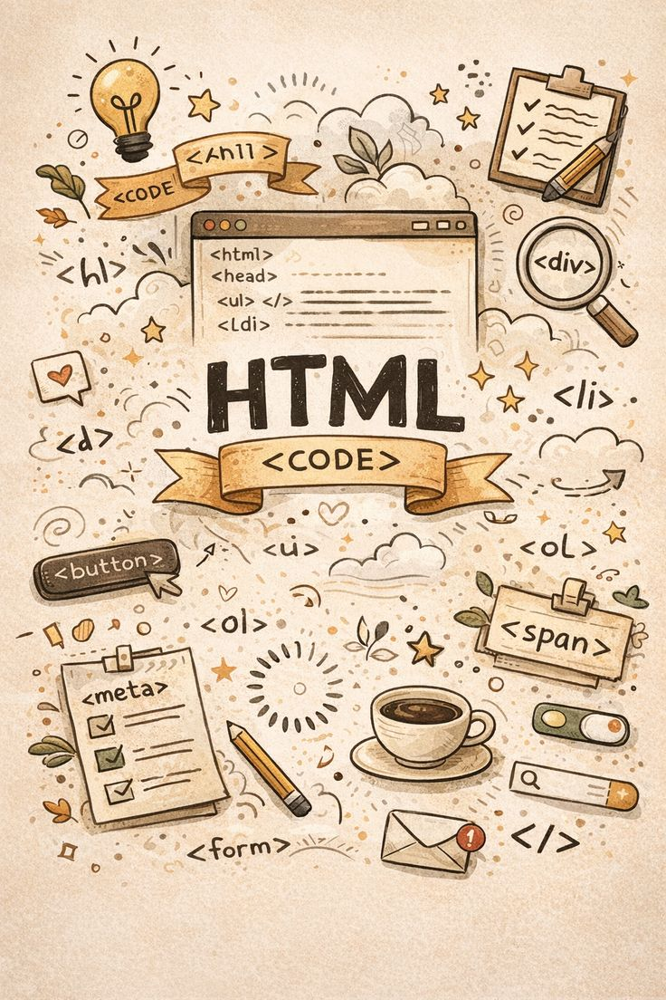
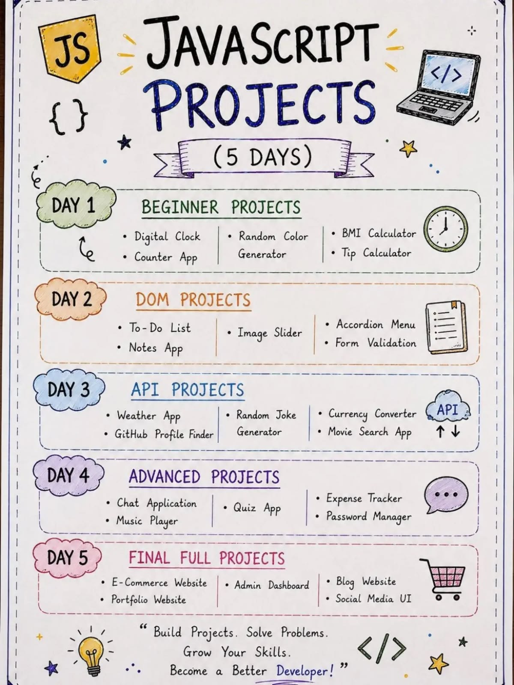
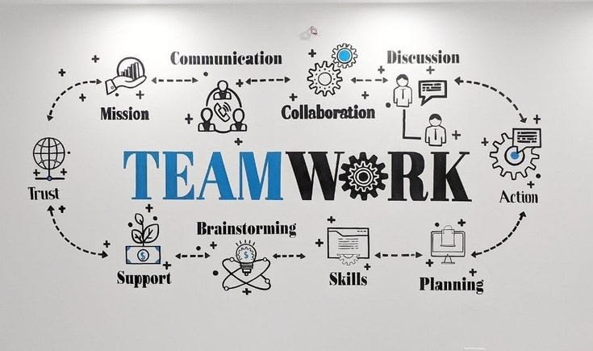
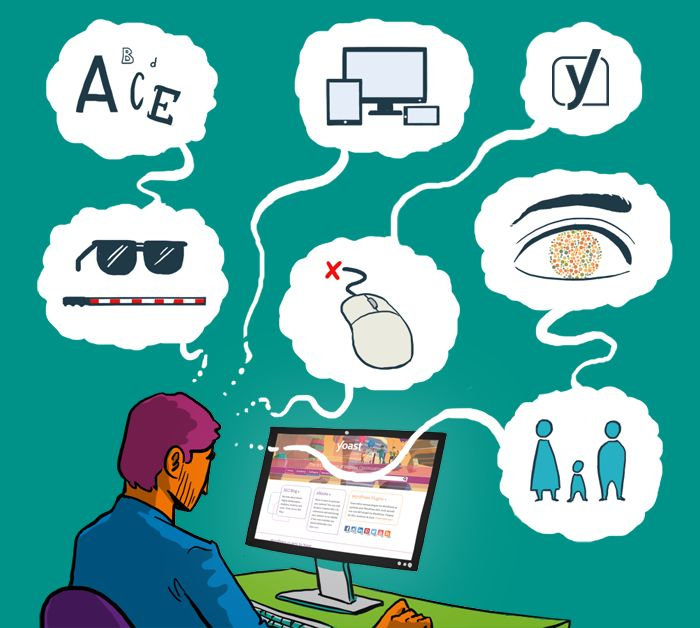

Catatan teknologi & pengembangan.
Tempat saya membagikan catatan tentang UI/UX, frontend development, backend, database, dan pengalaman membangun sistem informasi.

Frontend · HTMLHTML bukan hanya tentang tampilan
Memahami semantic HTML dan bagaimana struktur halaman yang baik dapat membantu membuat website lebih mudah digunakan.
Desain yang bagus harus mudah digunakan
Membahas hubungan antara desain antarmuka, pengalaman pengguna, dan accessibility ketika membangun produk digital.

Development · JavaScriptJavaScript untuk membuat website interaktif
JavaScript menjadi salah satu bagian penting dalam membuat halaman website yang responsif terhadap interaksi pengguna.

Backend · LaravelMengenal backend dengan Laravel
Catatan mengenai bagaimana Laravel dapat digunakan untuk membangun aplikasi web, mengelola request, database, authentication, dan berbagai kebutuhan backend.

Database · Sistem InformasiDatabase sebagai fondasi sistem informasi
Sebuah sistem informasi membutuhkan struktur data yang baik agar proses penyimpanan, pengolahan, dan pencarian data dapat berjalan dengan efektif.
 Sistem Informasi · Development
Sistem Informasi · Development
Dari desain sampai sistem yang berjalan
Pengembangan sistem tidak berhenti pada tampilan. Frontend, backend, database, testing, dan pengalaman pengguna harus bekerja sebagai satu kesatuan.
Belajar. Membangun. Berbagi.
Blog ini saya gunakan sebagai ruang untuk mencatat proses belajar, pengalaman mengembangkan aplikasi, eksplorasi UI/UX, serta berbagai hal yang saya temui selama belajar dan bekerja di bidang Sistem Informasi dan pengembangan perangkat lunak.